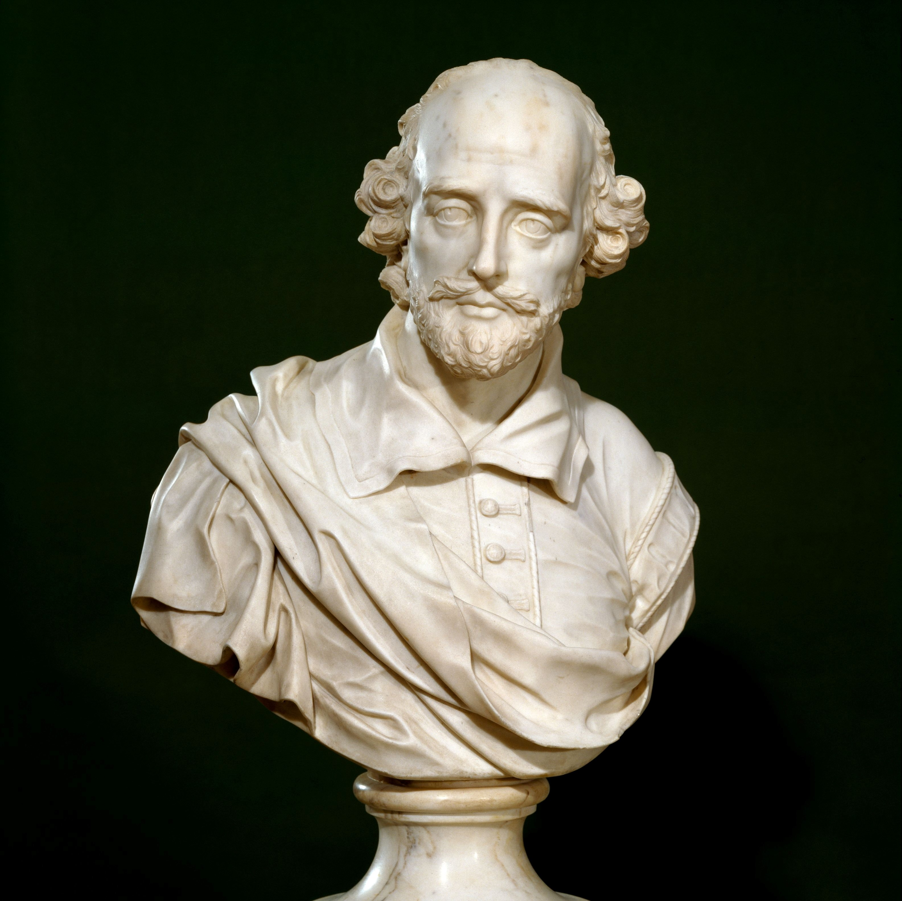

Below are some of my projects that I have completed for various college classes and independent studies. These essays were the result of intensive and multi-disciplinary research into topics such as Shakespeare, map making, the NSA and other governmental agencies and documents, historiography, and climate science research.
"So They Rode On: Mapping Cormac McCarthy"
In this project, which was created for an independent study, LMC3226, on the writings of cormac McCarthy. This project focuses on the geographical movement of the main characters in The Border Trilogy.

"Elsinore and the Modern Surveillance State"
This essay, created for LMC3228, compares the modern American surveillance state with that in William Shakespeare's Hamlet.
"Deep Time and Climate Change"
This essay, created for LMC1001, focuses on Daniel Lord Smail's On Deep History and the Brain, which looks into the psychological ramifications of deep time and it's affect on historiography and climate change narratives.